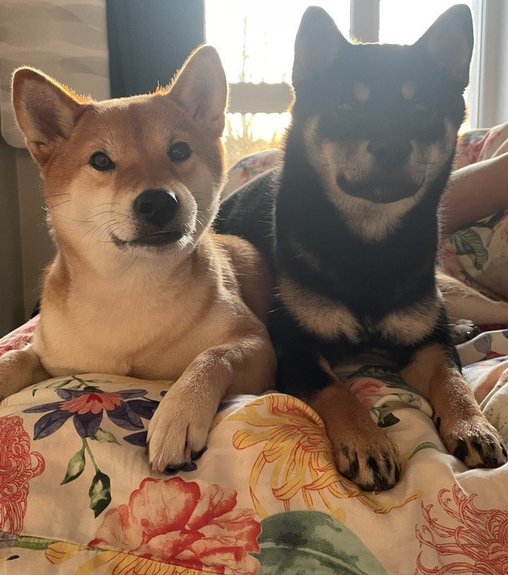
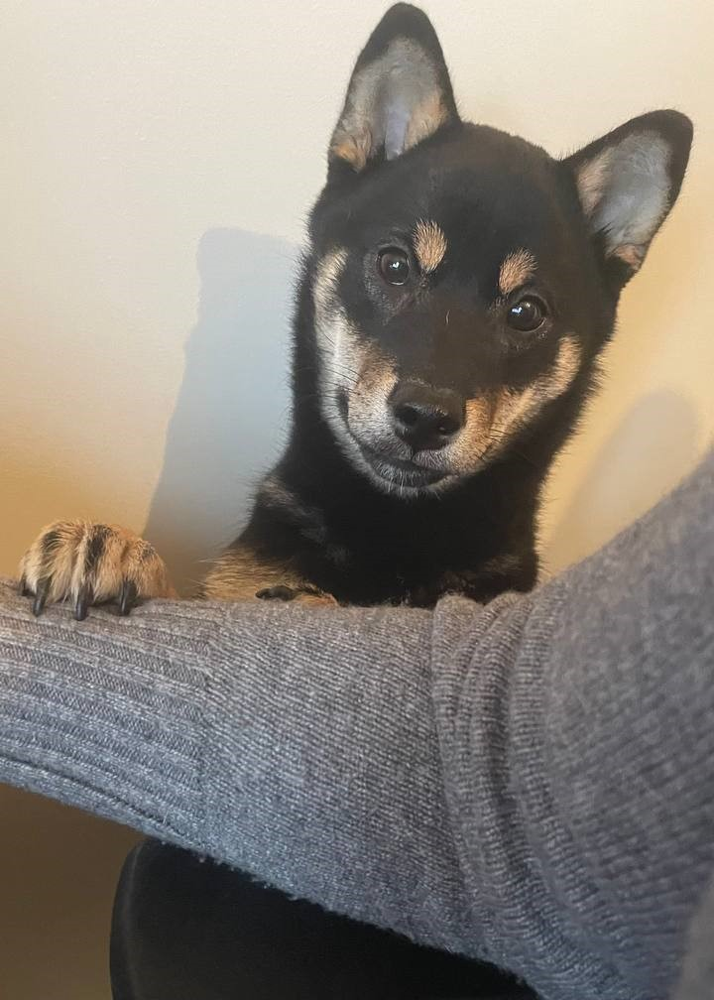

My precious dog - Shiba Inu

Adaptability
Adapts Well To Apartment Living
Contrary to popular belief, small size doesn't necessarily an apartment dog make. Plenty of small dogs are too high-energy and yappy for life in a high-rise. Being quiet, low energy, fairly calm indoors, and polite with the other residents are all good qualities in an apartment dog. And you can find an awesome crate for your dog here to give them a little more personal space in your apartment.Good For Novice Owners
Some dogs are simply easier than others; they take to training better and are fairly easygoing. They're also resilient enough to bounce back from your mistakes or inconsistencies.Dogs who are highly sensitive, independent thinking, or assertive may be harder for a first-time dog parent to manage. You'll get your best match if you take your dog-owning experience into account as you choose your new pooch.
Sensitivity Level
Some dogs will let a stern reprimand roll off their backs, while others take even a dirty look to heart. Low-sensitivity dogs, also called "easygoing," "tolerant," "resilient," and even "thick-skinned," can better handle a noisy, chaotic household, a louder or more assertive owner, and an inconsistent or variable routine. Do you have young kids, throw lots of dinner parties, play in a garage band, or lead a hectic life? Go with a low-sensitivity dog.Tolerates Being Alone
Some breeds bond very closely with their family and are more prone to worry or even panic when left alone by their owner. An anxious dog can be very destructive--barking, whining, chewing, and otherwise causing mayhem. These breeds do best when a family member is home during the day or if you can take the dog to work.All Around Friendliness
Affectionate With Family
Some breeds are independent and aloof, even if they've been raised by the same person since puppyhood; others bond closely to one person and are indifferent to everyone else; and some shower the whole family with affection. Breed isn't the only factor that goes into affection levels; dogs who were raised inside a home with people around feel more comfortable with humans and bond more easily.Kid-Friendly
Being gentle with children, sturdy enough to handle the heavy-handed pets and hugs they can dish out, and having a blasé attitude toward running, screaming children are all traits that make a kid-friendly dog. You may be surprised by who's on that list: Fierce-looking Boxers are considered good with children, as are American Staffordshire Terriers (which are considered Pit Bulls). Small, delicate, and potentially snappy dogs such as Chihuahuas aren't always so family-friendly.Dog Friendly
Friendliness toward dogs and friendliness toward humans are two completely different things. Some dogs may attack or try to dominate other dogs, even if they're love-bugs with people; others would rather play than fight; and some will turn tail and run. Breed isn't the only factor. Dogs who lived with their littermates and mother until at least six to eight weeks of age and who spent lots of time playing with other dogs during puppyhood, are more likely to have good canine social skills.Health And Grooming Needs
Amount Of Shedding
If you're going to share your home with a dog, you'll need to deal with some level of dog hair on your clothes and in your house. However, shedding does vary greatly among the breeds. Some dogs shed year-round, some "blow" seasonally, some do both, and some shed hardly at all. If you're a neatnik, you'll need to either pick a low-shedding breed or relax your standards. To help keep your home a little cleaner.Drooling Potential
Drool-prone dogs may drape ropes of slobber on your arm and leave big, wet spots on your clothes when they come over to say hello. If you've got a laid-back attitude toward slobber, fine; but if you're a neatnik, you may want to choose a dog who rates low in the drool department.Size
Dogs come in all sizes, from the world's smallest pooch, the Chihuahua, to the towering Great Dane, how much space a dog takes up is a key factor in deciding if they're compatible with you and your living space. Large dog breeds might seem overpowering and intimidating, but some of them are incredibly sweet! Take a look and find the right sized dog for you!Physical Needs
Energy Level
High-energy dogs are always ready and waiting for action. Originally bred to perform a canine job of some sort, such as retrieving game for hunters or herding livestock, they have the stamina to put in a full workday. They need a significant amount of exercise and mental stimulation, and they're more likely to spend time jumping, playing, and investigating any new sights and smells.Low-energy dogs are the canine equivalent of a couch potato, content to doze the day away. When picking a breed, consider your own activity level and lifestyle, and think about whether you'll find a frisky, energetic dog invigorating or annoying.
Exercise Needs
Some breeds do fine with a slow evening stroll around the block. Others need daily, vigorous exercise, especially those that were originally bred for physically demanding jobs, like herding or hunting. Without enough exercise, these breeds may put on weight and vent their pent-up energy in ways you don't like, such as barking, chewing, and digging. Breeds that need a lot of exercise are good for outdoorsy, active people, or those interested in training their dog to compete in a high-energy dog sport, such as agility.

